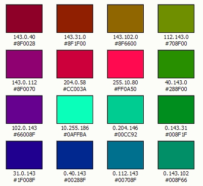

Web Page Design Tips
from Creating Web Pages with HTML and XHTML, by Patrick Carey, pages 159-160, Course Technology, 2006
- View colors at different resolutions
- Use web safe colors
- Ensure foreground colors contrast well with background colors
- When specifying fonts, always include a generic, font type in case the user computer doesn’t have your font.
- Limit to 2-3 fonts
- Limit to 3-4 font sizes
- Use relative font sizes where appropriate
- Combine multiple font style attributes into one style attribute (font: )
- Use GIFs and JPGs files appropriately
- Don’t use too many images
- Reuse images within a web site
- Give pages within a web site a consistent appearance.
- Include width and height attributes for all images.
- Use thumbnails to allow users to preview large images.
- View your page in a browser with images turned off
- Avoid large amounts of unnecessary white space except on the outside margins
- Provide alternate text for image maps.
Possible Web Colors to match MSTC header/footer

Web Design Resources